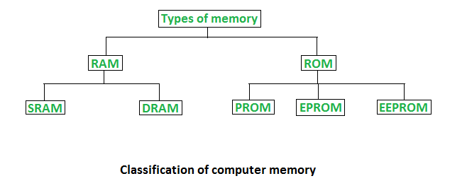
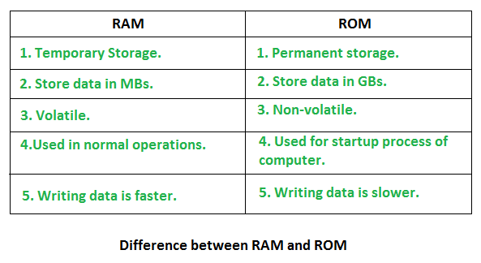

Memory is the best essential element of a computer because computer can’t perform simple tasks. Computer memory is of two basic type – Primary memory / Volatile memory and Secondary memory / non-volatile memory. Random Access Memory (RAM) is volatile memory and Read Only Memory (ROM) is non-volatile memory.

1. Random Access Memory (RAM) –
- It is also called as read write memory or the main memory or the primary memory.
- The programs and data that the CPU requires during execution of a program are stored in this memory.
- It is a volatile memory as the data loses when the power is turned off.
- RAM is further classified into two types- SRAM (Static Random Access Memory) and DRAM (Dynamic Random Access Memory).

2. Read Only Memory (ROM) –
- Stores crucial information essential to operate the system, like the program essential to boot the computer.
- It is not volatile.
- Always retains its data.
- Used in embedded systems or where the programming needs no change.
- Used in calculators and peripheral devices.
- ROM is further classified into 4 types- ROM, PROM, EPROM, and EEPROM.
Types of Read Only Memory (ROM) –
- PROM (Programmable read-only memory) – It can be programmed by user. Once programmed, the data and instructions in it cannot be changed.
- EPROM (Erasable Programmable read only memory) – It can be reprogrammed. To erase data from it, expose it to ultra violet light. To reprogram it, erase all the previous data.
- EEPROM (Electrically erasable programmable read only memory) – The data can be erased by applying electric field, no need of ultra violet light. We can erase only portions of the chip.
